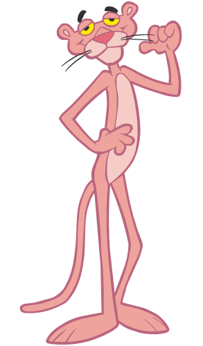

A Pantera Cor-de-Rosa (The Pink Panther) é um dos personagens mais icônicos da história da animação mundial, criado originalmente em 1963. O felino charmoso e elegante nasceu meio "sem querer": ele foi desenvolvido por David H. DePatie e Friz Freleng apenas para ilustrar os créditos de abertura da comédia policial homônima dirigida por Blake Edwards e estrelada por Peter Sellers. No filme original, o título se referia a um valioso diamante que tinha a imagem de uma pantera em seu interior.